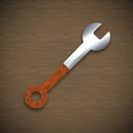
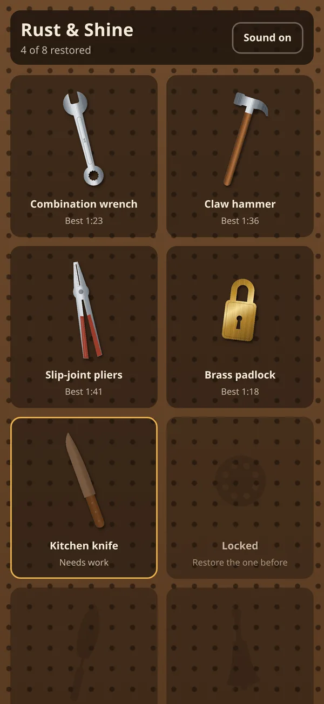
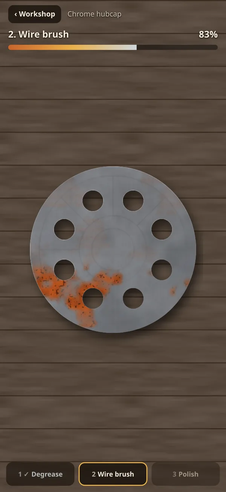
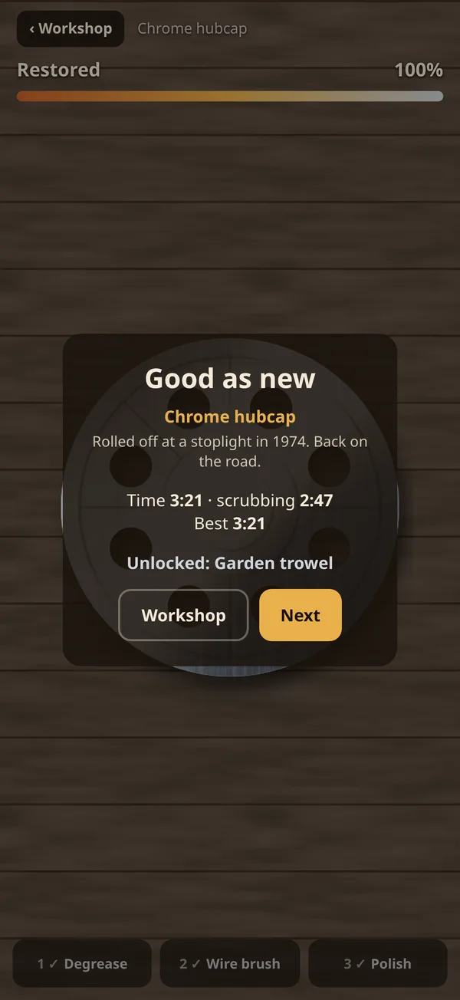

Rust & Shine
Scrub old tools back to new.
Every workshop has a drawer of tools nobody has touched in years. Pull one out and bring it back: clear the grease, wire-brush the rust, then polish it until the light runs across it.
In development, coming to the App Store


What's inside
Eight objects
A wrench, claw hammer, pliers, brass padlock, kitchen knife, chrome hubcap, garden trowel and brass bell.
Three tools
Degrease, wire brush, polish. Each stage reveals the next, and each object fights back a little differently.
Sound that follows you
Scrub faster and the brush gets louder. Every sound is made live by the game, not a recording.
- ControlsDrag one finger
- LengthA few minutes per object
- OnlinePlays fully offline
- PrivacyNo ads, no account, no tracking
Privacy
Last updated November 2026.
What we collect
Nothing. Rust & Shine has no accounts, no ads and no analytics, and it never connects to the internet. Your progress, best times and sound setting are saved on your device and never sent to us.
Children
The game doesn't collect personal information from anyone, including children.
Changes
If a future version adds anything that collects data, we'll update this page and the App Store privacy details first.
Support
Email support@clarkestudios.com
Tell us your device and what happened. A real person reads every message, usually within two business days.
How do I finish a stage?
Keep scrubbing until the meter reaches the end. The tool changes on its own when a stage is done.
How do I unlock the next object?
Finish the object before it. Finished pieces hang on the workshop wall, where you can replay them to beat your time.
Can I turn the sound off?
Yes. Tap the sound button on the workshop wall.